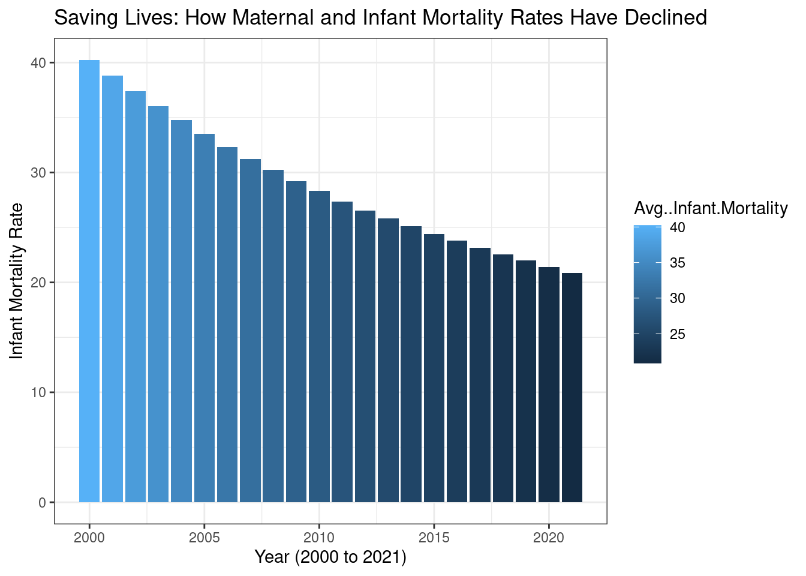

Who Opts For Cesarean Deliveries : Delving Deep Into The C-Section Trends

Introduction
The experience of childbirth represents a pivotal and life-changing event for women and their families across the globe. However, the method by which babies are delivered has undergone significant changes over time, with an increasing number of women now electing to undergo cesarean sections (C-sections) as opposed to vaginal delivery. The reasons behind this shift in delivery method may vary and can include a range of factors, such as maternal preference, concerns over potential complications associated with vaginal delivery, or medical indications that may necessitate a C-section. Nevertheless, it is important to understand the implications of this trend, particularly with regard to the potential health outcomes for both mother and infant. While C-section delivery can be a life-saving procedure in certain situations, it also carries its own set of risks and potential complications. Thus, a comprehensive examination of the impacts of C-section delivery versus vaginal delivery is necessary to ensure that women are equipped with the information necessary to make informed decisions about their childbirth options.
While C-sections can be life-saving in certain situations, they are also major surgeries that come with potential risks and complications. Cesarean sections, or C-sections, have become increasingly common around the world, with rates rising in many countries over the past few decades.
Trend Analysis
In order to ascertain the potential health benefits of cesarean section delivery, it is imperative to examine and analyze the health outcomes across a span of time, specifically between the years 2000-2021. It is important to note, however, that while cesarean delivery may play a role in maternal and neonatal health, it is also possible that there are other factors that contribute to these health outcomes. As such, a comprehensive examination of the available data is necessary to determine the overall impact of cesarean section delivery on maternal and neonatal health during the aforementioned time period.
Maternal and Infant Mortality Rates

The present analysis reveals a significant decrease in maternal and infant mortality rates. This underscores the importance of providing optimal care for women during the transformative and life-changing experience of childbirth. The health and well-being of mothers and infants are of paramount concern, and every effort must be made to ensure that they receive the highest quality care. The findings of this analysis call for continued efforts by healthcare providers and policymakers to prioritize maternal and infant health and to implement evidence-based strategies aimed at improving maternal and neonatal outcomes. Ultimately, by investing in maternal and infant health, we can improve the quality of life for families and communities and ensure that every woman receives the care she deserves during this critical time.